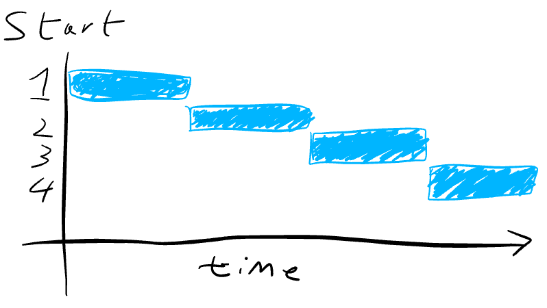

class: middle, inverse, slide-purple <br> # Gleam: Extreme BEAM typing machine ## Louis Pilfold<br>@louispilfold ??? I'm Louis Founder of Waive Using Elixir and Erlang for 4-5 years. Built dogma, exfmt, mix test.watch Done some work inside the compiler For the last year been working on Gleam What is Gleam? --- ## Hello, Gleam! ```rust pub enum LinkedList(a) = | Nil | Cons(a, LinkedList(a)) pub fn contains(list, a) { case list { | Nil -> False | Cons(x, xs) -> x == a || contains(xs, a) } } ``` ??? This is Gleam Runs on the Erlang VM like Elixir Has curly braces. --- class: title, middle, slide-blue # Why a new language? ??? A good place to start. Why have I wasted the last year of my life doing this when we have Elixir and Erlang? To understand this let's take a look at Elixir and Erlang. Who here considers themselves an Elixir user? Who is new to Elixir? Who has never used Elixir? --- class: title, middle, slide-blue # What are BEAM languages good at? --- ## Concurrency <img class="center-element" src="lyse-sequential-accept.png"> <br> <img class="center-element" src="lyse-parallel-accept.png"> ??? When we write programs in Elixir and Erlang we can take advantage of the concurrency features of the virtual machine. Here we have 2 diagrams that I've stolen from LYSE. They show how a hypothetical web server application. It listens and accepts requests as fast as possible. What impact does concurrency have on the performance of the web server? --- ## Without concurrency  ??? Here's a graph showing how the requests are handled over time. 4 requests are made to the server at the same time. The first request is handled, then the second, then the third, then the fourth. The time taken to handled all the requests is equal to the sum of the time taken by each request. --- ## Without concurrency ??? What happens when one request is slow and takes more time than we would like? All requests that come after the slow request have to wait for it to complete before they can be processed. --- ## With concurrency ??? So what about when the web server handles requests concurrently? Here each request is handled in a dedicated light-weight virtual machine thread that in the Erlang world we call a process. Other languages have other abstractions, but we use processes. Each process works independently, so when 4 requests come in at the same time none of them need to wait for others to finish. The total time taken is now equal to the time taken by the slowest request, with a largely insignificant overhead for the concurrency abstraction. --- ## With concurrency ??? What happens when one request is slow? Because all the processes are independent it doesn't matter if one is slow- no others are delayed. --- ## Parallelism <img style="width: 90%" class="center-element" src="core-over-time.jpg"> <cite> Nikos Hardavellas, Northwestern University, EECS </cite> --- ## Predictable garbage collection --- ## Fault tolerance --- ## Simple functional programming --- ## Libraries and tooling --- ## Dynamic programming --- ## Meta programming --- ## Binary manipulation --- ## Interoperability between languages --- ## Community --- class: title, middle, slide-blue # What are they not quite as good at? ??? Sadly Erlang and Elixir are not perfect There's a bunch of things that could be improved with them. The aspect I'm particularly interested is how they present feedback to the programmer when a mistake has been made. I think that improvements in this area could bring great value and productivity for relatively low cost. Let's take a closer look. --- class: center ## Error messages can be unhelpful ??? Error messages leave a lot to be desired. Here we have an error being printed after we call the function `MyApp.name` on a string. Many Elixir error messages are better than this one but it is not an atypical example for Elixir, and it is the norm for Erlang. I'm going to focus on common cases that could be improved. Beyond the name "argument error" it doesn't tell us what the problem is. It shows a call to `erlang.atom_to_binary` so we can establish that the application crashes at this point, but where is the source of the error? Have we called `MyApp.name` with the wrong argument? Perhaps it wants and atom rather than a string. Alternatively is the `MyApp` module internally inconsistent? Does it have a bug? We could be using it as intended but the code we're calling is the source of the problem? There's no way to tell without reading the documentation, the source code, or if we get unlucky, both. --- class: center ## Meanwhile, in Elm <img src="elm-error.png"> <br> ??? Here's how the same problem would be reported in the Elm programming language. It tells us exactly where the problem is, it's on line 8 where we called `MyApp.name`. It even shows us the code. This is fantastic- we know exactly where we need to make the change, it's where we called the function. With this feedback we have complete confidence that the `MyApp.name` function is not the problem, so we don't need to investigate further. If there was a problem with `MyApp.name` this error would show exactly where, so even in scenario all we would need to do is to open the right file and scroll to the specified line. What's more it tells us exactly what the problem is, in this case that we are calling it with a String when it expects an Int. It even gives us a hint of how to turn an Int into a String. --- ## Slow feedback cycle --- ## Refactoring isn't cheap ??? We rely on unit tests to catch errors and mistakes If that doesn't work we they might be found during manual testing If that doesn't work we may find the mistake when processes crash in production --- class: large-code ## Hard to verify behaviour <br> ```ruby queue = QueueLib.append(queue, 10) ``` ??? What will this function do? Will it always return the same thing? Could it throw an exception? Could it write to the database? Could it cause the program to exit? --- ## Which languages do these better? <style type="text/css" media="screen"> .langs { display: flex; justify-content: space-around; align-items: center; flex-wrap: wrap; } .langs div { display: inline-block; max-width: 40%; margin-top: 30px; } .langs img { max-width: 100%; max-height: 150px; } </style> <div class="langs"> <div> </div> <div> <img src="haskell.svg"> </div> <div> <img src="elm.png"> </div> <div> <img src="reason.svg"> </div> <div> <img src="rust.png"> </div> <div> <img src="scala.png"> </div> </div> ??? --- Ven diagram here --- Ven diagram with Gleam here --- class: middle, slide-blue ## Want to make a language? - The Super Tiny Compiler <br> Jamie Kyle - Understanding Computation <br> Tom Stuart - Types & Programming Languages <br> Benjamin C. Pierce - Type Systems <br> Tom Primožič ??? --- class: middle, slide-purple ### Some links - https://gleam.run - https://github.com/lpil/gleam - IRC `#gleam-lang` on Freenode ### Thanks to Jonny Arnold, Jeremy Pierre, José Valim. ### Call me? - @louispilfold ???